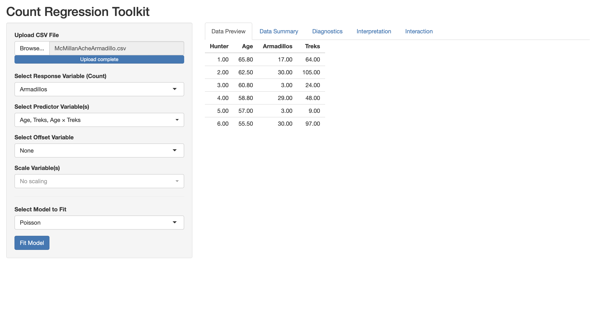
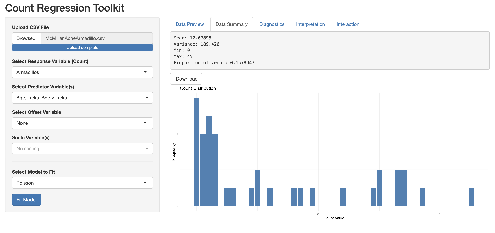
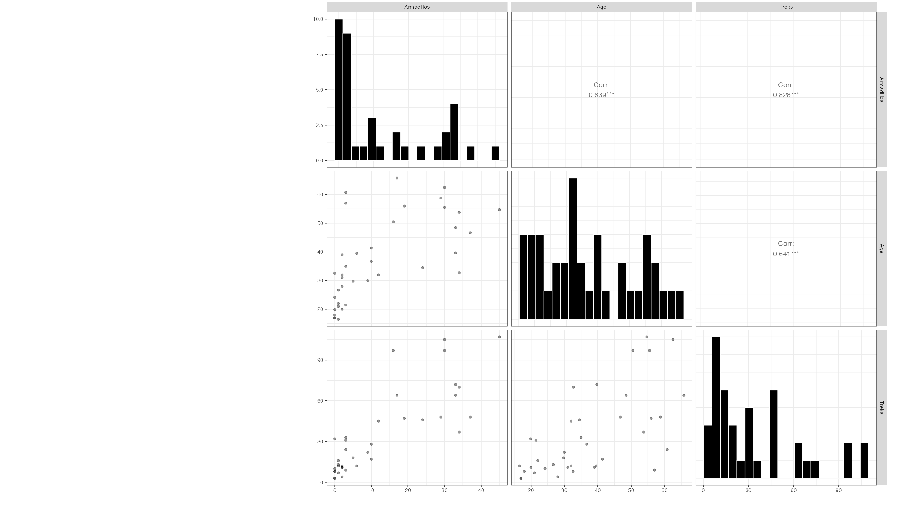
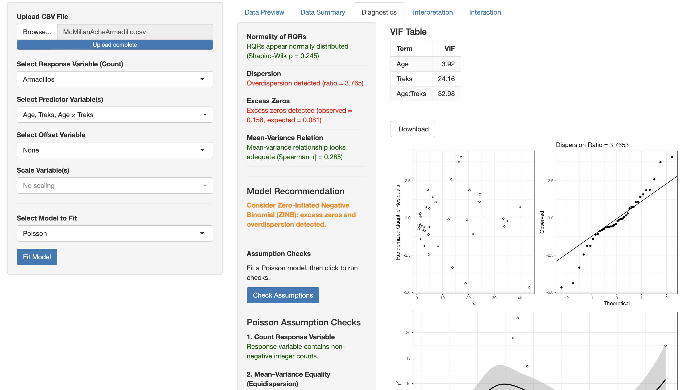
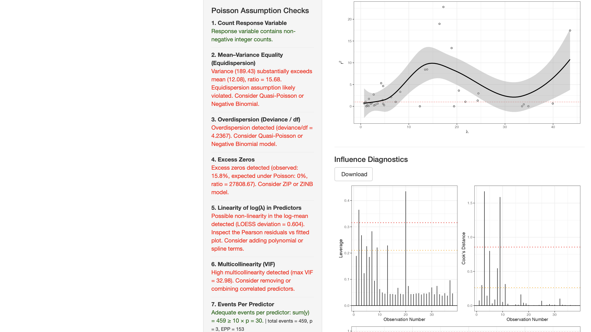
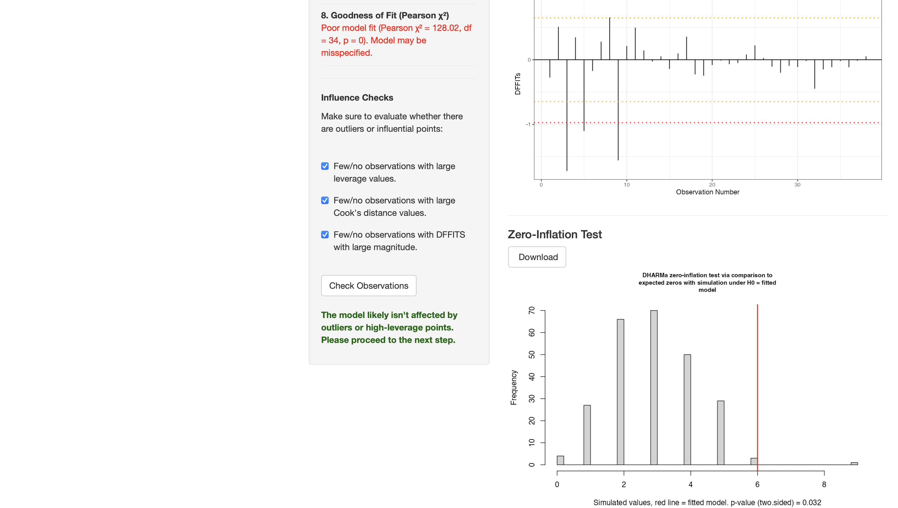
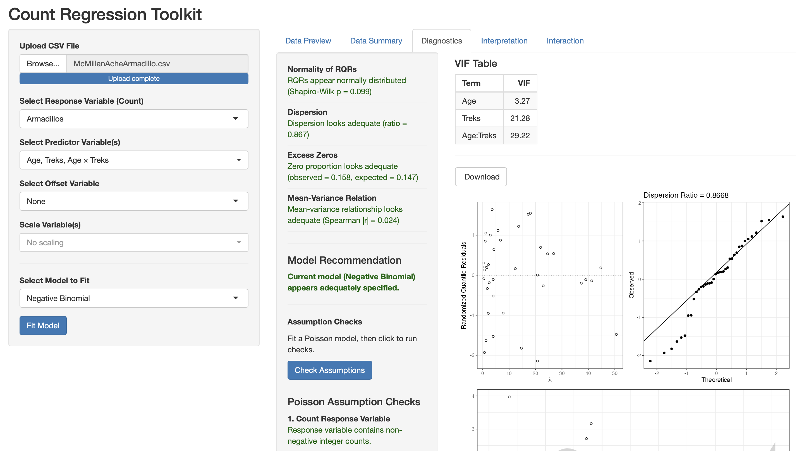
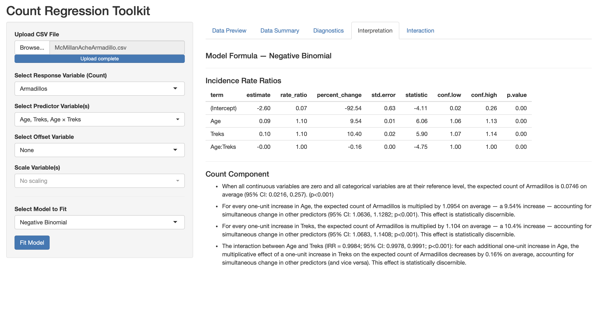

Armadillo Count Regression Analysis
Background
This analysis examines data collected from \(n = 38\) hunters to assess whether a hunter’s age and number of treks predict the number of armadillos hunted, and whether an interaction between the two predictors is needed.
The proposed model is:
\[\text{Armadillos} \sim \text{Age} + \text{Treks} + \text{Age} \times \text{Treks}\]
Because the outcome is a count variable, count regression models (Poisson and Negative Binomial) are used from the Count Regression Dashboard.
Data Preview
The dataset (McMillanAcheArmadillo.csv) contains four variables: Hunter (ID), Age, Armadillos (count), and Treks. A sample of the first rows is shown below.

Data Summary

Inspection of the data reveals the following:
- Mean: 12.08
- Variance: 189.43
- Min: 0, Max: 45
- Proportion of zeros: 0.158
The variance (189.43) is substantially larger than the mean (12.08), with a mean-variance ratio of approximately 15.7 — a strong early indicator of overdispersion. The proportion of zero counts (15.8%) is also non-trivial.
Pairwise Plots

The pairwise plots reveal positive correlations between all three variables. Notably:
- Armadillos ~ Age: Correlation = 0.639 (***) — older hunters tend to encounter more armadillos.
- Armadillos ~ Treks: Correlation = 0.828 (***) — hunters who go on more treks encounter substantially more armadillos.
- Age ~ Treks: Correlation = 0.641 (***) — age and treks are themselves correlated, which will be relevant for multicollinearity assessment.
Model Selection and Diagnostics
Poisson Model Diagnostics
The initial Poisson model was fit and evaluated using the Diagnostics tab.

The Poisson diagnostics flagged several problems:
- Normality of RQRs: Shapiro-Wilk p = 0.245 — RQRs appear normally distributed
- Dispersion: Overdispersion detected (ratio = 3.765)
- Excess Zeros: Excess zeros detected (observed = 0.158, expected = 0.081)
- Mean-Variance Relation: Spearman |r| = 0.285 — adequate
- Model Recommendation: Consider Zero-Inflated Negative Binomial (ZINB): excess zeros and overdispersion detected.
Poisson Assumption Checks

The full Poisson assumption checks confirm:
- Response variable contains non-negative integer counts.
- Equidispersion violated — variance (189.43) far exceeds mean (12.08), ratio = 15.68.
- Overdispersion confirmed — deviance/df = 4.24. Consider Quasi-Poisson or Negative Binomial.
- Excess zeros — observed 15.8%, expected under Poisson: 0%. Consider ZIP or ZINB.
- Possible non-linearity in log(λ) — LOESS deviation = 0.604.
- High multicollinearity — max VIF = 32.98 (driven by the interaction term).
- Adequate events per predictor (EPP = 153).
Goodness of Fit and Influence

- Goodness of fit: Poor model fit (Pearson χ² = 128.02, df = 34, p = 0) — the Poisson model is misspecified.
- Influence checks: Few/no observations with large leverage, Cook’s distance, or DFFITS values
- Zero-inflation test (DHARMa): p = 0.032 — borderline evidence of excess zeros.
Negative Binomial Model
Given the overdispersion detected under Poisson, a Negative Binomial model was fit instead.

The Negative Binomial diagnostics show substantial improvement across all checks:
- Normality of RQRs: Shapiro-Wilk p = 0.099 — RQRs appear normally distributed
- Dispersion: Ratio = 0.867 — dispersion looks adequate
- Excess Zeros: Observed = 0.158, expected = 0.147 — zero proportion looks adequate
- Mean-Variance Relation: Spearman |r| = 0.024 — adequate
- Model Recommendation: Current model (Negative Binomial) appears adequately specified.
Interpretation
Incidence Rate Ratios

The Negative Binomial model results yield the following Incidence Rate Ratios (IRRs):
| Term | Estimate | IRR | % Change | p-value |
|---|---|---|---|---|
| (Intercept) | -2.60 | 0.07 | -92.54% | < 0.001 |
| Age | 0.09 | 1.10 | +9.54% | < 0.001 |
| Treks | 0.10 | 1.10 | +10.40% | < 0.001 |
| Age:Treks | -0.00 | 1.00 | -0.16% | < 0.001 |
Interpretation of each term:
Age: For every one-unit increase in age, the expected count of armadillos is multiplied by 1.10 — a 9.54% increase — holding treks constant (95% CI: 1.06, 1.13; p < 0.001).
Treks: For every one-unit increase in treks, the expected count of armadillos is multiplied by 1.10 — a 10.4% increase — holding age constant (95% CI: 1.07, 1.14; p < 0.001).
Age × Treks interaction: The multiplicative effect of treks on armadillo count decreases by 0.16% for each additional year of age (IRR = 0.9984; 95% CI: 0.9978, 0.9991; p < 0.001). Although small in magnitude, this interaction is statistically significant — the effect of treks depends on the hunter’s age.
Summary
Trek frequency and age are both statistically significant predictors of armadillo encounters, and they interact. A Negative Binomial regression model was necessary to account for the overdispersion detected under the initial Poisson model (dispersion ratio = 3.77 under Poisson, 0.87 under Negative Binomial). Once the Negative Binomial model was adopted, all major diagnostic checks passed. Researchers studying armadillo encounter rates should account for both how often hunters go out and their age, as these factors jointly predict wildlife encounters.